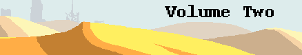
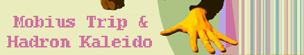
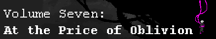
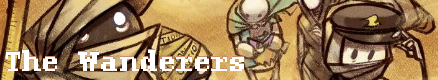
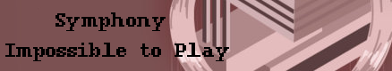
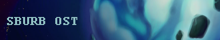

- Showtime (Piano Refrain) -- Sheet music by afterthought, MIDI by joethejrpgmaniac, lugiaa
- Harlequin -- Sheet music by AgentParsec -- MIDI by Unknown and IronInvoker47
- Showtime (Original Mix) -- MIDI by MrCheeze and IronInvoker47
- Sburban Jungle (Brief Mix) - Sheet music by Game Hunter
- Aggrieve (Violin Refrain) -- Sheet music by Danny Wolf
- Sburban Countdown -- MIDI by Unknown and IronInvoker47
- Aggrieve -- Sheet music by Game Hunter -- MIDI by Unknown and IronInvoker47
- Showtime (Imp Strife Mix) -- Sheet music by Resound
- Nannaquin -- MIDI by IronInvoker47
- Skies of Skaia -- Sheet music by Resound, MIDI by Unknown

- Upward Movement (Dave Owns) -- Sheet music by BRPXQZME -- MIDI optimized for quoting by JohnJRenns, normal MIDI by Unknown
- Explore -- Sheet music by Nocturne and Quaddy -- MIDI by Goatmon, orchestral MIDI by Unknown
- Gardener -- Tabs by lugiaa
- Guardian -- Sheet music by Danny Wolf -- MIDI by Danny Wolf
- Beatdown -- Sheet music by Game Hunter -- MIDI by MrCheeze and IronInvoker47 -- Guitar tabs by temporallyRonin
- Dissension -- MIDI by Unknown
- Ohgodwhat -- MIDI by IronInvoker47
- Ohgodwhat (Remix) -- MIDI by Unknown
- Chorale for Jaspers -- Sheet music by Zephyr
- Pony Chorale -- MIDI by Unknown, Piano version by Unknown
- Three in the Morning -- Sheet music by Geekthras #1, Nocturne 1 2 3 4 5 6 7, Geekthras #2, Piano score by kurama101, MIDI by Unknown
- Liquid Negrocity -- Sheet music by Nocturne, Game Hunter -- MIDI by Radiation, Miff, MrCheeze
- The Ballad of Jack Noir -- MIDI by Unknown
- Moonshine -- Sheet music by Game Hunter, Sheet music by Kraethi
- Tall, Dark and Loathsome -- Sheet music by Nocturne
- Revelawesome -- MIDI by MrCheeze
- Mutiny -- MIDI by cookiefonster, Unknown
- Carefree Victory -- Sheet music by Miff -- MIDI by calibore
- Sburban Jungle -- Sheet music by ardentComposer -- MIDI by MrCheeze, cookiefonster -- Piano score for two pianos by Do the Musicy Thing
- Doctor -- Sheet music by FlamingTROUT -- MIDI by FlamingTROUT, by MrCheeze, Unknown, Piano MIDI by Unknown
- Atomyk Ebonpyre -- Sheet music by Game Hunter, BRPXQZME -- MIDI by MrCheeze, Radiation, Destradious
- Endless Climb -- MIDI by MrCheeze
- Black -- Sheet music by Game Hunter
- Homestuck Anthem -- Sheet music by Miff -- Piano MIDI by Miff
- Savior of the Waking World -- Sheet music by Game Hunter -- Piano score by min min, klug, Imgood -- French Horn score by silverseer -- MIDI by Qpmz234, Piano MIDI by min min
- Clockwork Melody -- Sheet music by Geekthras -- MIDI by IronInvoker47
- An Unbreakable Union -- MIDI by Unknown
- White - Piano Score by silverseer, Piano MIDI by silverseer
- Crystalanthemums -- Sheet music by Purple1222119
- Skaia (Incipisphere Mix) -- Sheet music by almostsix -- MIDI by Unknown
- Sarabande -- Sheet music by Jit, Arranged for string orchestra by MarimbaMaestoso (PDF and MIDI)
- Sunslammer -- Sheet music by invisibleForce, lugiaa, VeritasUnae -- MIDI by Beatfox, lugiaa, cookiefonster
- Chorale for War -- MIDI by Unknown
- Versus -- MIDI by Unknown
- Dupliblaze COMAGMA -- MIDI by IronInvoker47
- Sunsetter -- MIDI by Unknown
- Lotus -- Sheet music by infinityMechanism, MIDI by Unknown
- Ruins -- Sheet music by Jit, MIDI by Kieros
- Ectobiology -- MIDI by Putnam
- Crystamanthequins -- Sheets by adamus and Unknown and MIDI by adamus
- Light -- MIDI by Dohmb
- Ecstasy -- MIDI by IronInvoker47
- Candles and Clockwork -- Sheet Music by VeritasUnae -- MIDI by Unknown
- Descend -- Piano score by Kurama101 -- MIDI by cookiefonster, garret866, Piano MIDI by Imbrog
- Homestuck -- MIDI by Unknown and Unknown
- Darkened -- MIDI by IronInvoker47
- Crustacean -- Concert Band arrangement by Jay Furor (all parts/separate parts) -- MIDI by Unknown
- Showdown -- Sheet music by Game Hunter -- MIDI by MrCheeze and Unknown
- mIrAcLeS -- MIDI by Unknown
- psych0ruins -- Sheet music by Game Hunter -- MIDI by Unknown
- Walls Covered In Blood -- MIDI by Unknown
- The La2t Frontiier -- Sheet music by Game Hunter -- MIDI by Unknown
- The Thirteenth Hour -- Sheet music by Game Hunter -- MIDI by Unknown
- Spider's Claw -- Sheet music by Game Hunter -- MIDI by MrCheeze -- FLP by Unknown
- Keepers -- MIDI by Radiation
- Theme -- Sheet music by Game Hunter -- MIDI by Unknown
- Skaian Summoning -- Partial MIDI by unknown
- Squiddles! (vocals) -- Sheet music by Miff
- Friendship is Paramount -- MIDI by Beatfox-- Arrangement by BRPXQZME
- Squiddles Campfire -- Sheet music by Goatmon
- Ocean Stars -- MIDI by IronInvoker47
- Swing of the Clock -- Sheet music by almostsix
- Chartreuse Rewind -- Sheet music by almostsix
- The Broken Clock -- MIDI by Miff and Unknown
- Omelette Sandwich -- MIDI by Unknown
- Baroqueback Bowtier (Scratch's Lament) -- Sheet music by Kyntello, Viola score by candidcondescension
- Scratch -- Arrangement for solo organ by Imbrog -- MIDI by Unknown
- Time Paradox -- Sheet music by EidolonOrpheus 1 2 3
- Eldritch -- Sheet music by almostsix
- English -- Sheet music by almostsix, MIDI by seekercat

- Pachelbel's Gardener -- Sheet music by Game Hunter (Percussion)
- Land of Light and Cheer -- Sheet music by Game Hunter -- MIDI by Pokahs
- Candles and Merry Gentlemen -- Sheet music by Game Hunter (v2) -- MIDI by IronInvoker47
- Shit, Let's Be Santa -- MIDI by IronInvoker47
- Frost -- Sheet music by almostsix
- Umbral Ultimatum -- Piano Sheet music by Imbrog -- MIDI by Destradious, Unknown, Unknown
- GameBro (Original 1990 Mix) -- Sheet music by Nocturne, Game Hunter (organ solo) -- MIDI by Nocturne, Drums MIDI by JohnJRenns
- MeGaLoVania -- Sheet music by Game Hunter -- Tabs by Tensei, MIDI by MrCheeze, Unknown, Unknown, Unknown, Unknown, Unknown
- Walk-Stab-Walk (R&E) -- MIDI by Nocturne
- Elevatorstuck -- Flute Score by Optimatum, PDF by lugiaa, MIDIs by lugiaa (Piano, Full), Synthesia tutorial by lugiaa
- Three in the Morning (Pianokind) -- Score by Galactides 1 2
- A Tender Moment -- MIDI by IronInvoker47
- Stormspirit -- Sheet music by Clawtooth
- Heir Conditioning -- Sheet music by Danny Wolf -- Tabs by Tensei (guitar/bass)
- Dance of Thorns -- Sheet music by Moondelev -- Violin transcription by Clawtooth -- MIDI by Moondelev, Tensei
- Time On My Side -- Piano Sheet music by Purple1222119 -- MIDI by Purple1222119
- Atomic Bonsai -- MIDI by Tensei
- Knife's Edge -- MIDI by Smunos
- Make a Wish -- Tabs by ebullentMusician
- Karkat's Theme -- Flute score by Midnight.Gem Piano Score by Purple1222119 -- Duet scores by avelynchii (violins/violas/cellos) -- MIDI by garret866, Unknown
- Trollcops -- Sheet music by Jit, Zelthra -- MIDI by Zelthra
- Terezi's Theme -- Sheet music by Resound -- Piano solo by Moondelev -- MIDI by Unknown
- Dreamers and The Dead -- Sheet music by EidolonOrpheus 1
- Vriska's Theme -- MIDI by Unknown
- BL1ND JUST1C3: 1NV3ST1G4T1ON!! -- Sheet music by Sky Island, Full Score by Unknown -- MIDI by Sky Island, IronInvoker47
- Darling Kanaya -- Sheet music by pianoScientist -- MIDI by Unknown, IronInvoker47
- Requiem of Sunshine and Rainbows -- MIDI by Unknown
- Eridan's Theme -- Sheet music by Dudemaster47 -- Clarinet Score Musicrockz0623 -- MIDI by Radiation, IronInvoker47
- Rex Duodecim Angelus -- King's Theme transcribed by Doowhacker, Moondelev -- Rough MIDI by DragonXVI -- piano score by Do The Musicy Thing
- Alternia -- Sheet music by Geekthras (piano only), BRPXQZME
- The Blind Prophet -- Violin Score by silverseer -- MIDI by TirantBacon, Unknown

- Dawn of Man -- Chords by Kal-la-kal-la

- Black Rose, Green Sun -- Sheet Music by Quaddy, Piano Arrangement by Quaddy
- At the Price of Oblivion -- Sheet Music by arachnidCalibrator -- MIDI by Unknown, IronInvoker47
- Even In Death -- Piano score by Purple1222119 -- Violin score by Caustic -- MIDI by Unknown, IronInvoker47
- Terezi Owns -- Piano MIDI by Unknown
- The Carnival -- Piano MIDI by Unknown
- Play the Wind -- Sheet Music by Kyntello
- Warhammer of Zillyhoo -- Gregorian notation by BRPXQZME -- Modernized notation by Diminuitive Calvin
- Spider8reath -- MIDI by Tensei

- The Prelude -- Sheet Music by Tyler Dever
- Genesis -- Sheet Music by Tyler Dever
- Eden -- Sheet Music by Tyler Dever, starting bars by Seppuku (more sensible than official)
- Exodus -- Sheet Music by Tyler Dever
- Requiem -- Sheet Music by Tyler Dever
- The Meek -- Sheet Music by Tyler Dever
- Chronicles -- Sheet Music by Tyler Dever
- Rapture -- Sheet Music by Tyler Dever
- Creation -- Sheet Music by Tyler Dever
- Revelations I -- Sheet Music by Tyler Dever
- Revelations II -- Sheet Music by Tyler Dever
- Revelations III -- Sheet Music by Tyler Dever

- Tomahawk Head -- MIDI by Unknown
- Center of Brilliance -- Sheet Music and MIDI by infinityMechanism
- Derse Dreamers -- Violin Sheet Music by Liliumus, Piano sheet by adamus -- MIDI by adamus
- Core of Darkness -- Sheets by Caustic -- MIDI by zerliriousKvetch
- Calamity -- MIDI by intentionallyIncohesive
- Do You Remem8er Me -- Piano score by Quaddy -- Rough chords by Implode -- MIDI by Kyntello
- Flare -- Sheet music by Geekthras -- MIDI by IronInvoker47, Unknown (Cascade Version)
- Serenade -- Piano score (with additional themes) by Do the Musicy Thing -- MIDI by IronInvoker
- Frog Forager -- Piano score by Purple1222119 -- MIDI by Unknown
- Love You (Feferi's Theme) -- MIDI by IronInvoker
- Davesprite -- Piano score by Purple1222119 -- MIDI by Unknown and Unknown, Chiptune MIDI by Unknown
- Unite Synchronization -- Sheets and MIDI by adamus -- Arrangment for Marching Band by Saxophlutist -- Piano score by Do The Musicy Thing -- Woodwinds MIDI by accanaceousCouncillor -- Piano MIDI by IronInvoker
- Frostbite -- Piano MIDI by IronInvoker47
- The Lost Child -- Piano MIDI by Makogeddon
- Infinity Mechanism -- Sheet Music by Purple1222119 -- Piano score by Purple1222119 -- MIDI by Purple1222119
- Cascade -- Piano transcription by Purple1222119 -- Tabs by Danny Wolf -- MIDI by Purple1222119, LeQha
- I'm a Member of the Midnight Crew (Acapella) -- Sheet Music for Barbershop Quartet by David Ko -- MIDI by Unknown
- Black Hole, Green Sun -- Guitar Solo by lugiaa
- Song of Skaia -- Vocals by MuzikalNotes
- Gold Pilot - Sheet music by silverseer -- Sheet music by Do The Musicy Thing -- MIDI by Unknown and Unknown, Piano MIDI by Unknown
- Iron Infidel -- Sheet music by mayorails -- MIDI by Unknown, IronInvoker47
- Purple Tyrant -- Sheet music by PiGuy17 , kurama101-- MIDI by Makogeddon
- Olive Rogue -- Electric bass chords by Dontrush -- MIDI by Unknown
- Cobalt Thief -- Sheet music by Superpig -- MIDI by TheLoveableTramp
- Purple Bard -- MIDI by Gec
- Violet Prince -- Sheet music by Bob Franklin (unfinished) -- MIDI by cookiefonster, IronInvoker47
- ~~ADDITIONAL MAYHEM~~ (Universe A) -- MIDI by IronInvoker47
- Temporal Shenanigans -- MIDI by Unknown
- Green Ghost -- Sheet music by adamus -- MIDI by adamus
- Blue Atom -- Sheet music by Dontrush,OI3L1V1OUS -- Solo MIDI by Unknown
- Emerald Terror -- Sheet music by Phantasmicka
- ~~ADDITIONAL MAYHEM~~ (Universe B) -- MIDI by IronInvoker47
- Do The Windy Thing -- Sheet music by kurama101 -- Marching band MIDI by Unknown
- Ohgodcat -- Sheet music by adamus -- MIDI by Gec
- Battle Brotocol -- MIDI by IronInvoker47
- The Vast Glub -- MIDI by adamus
- Clockstopper -- MIDI by temporallyRonin
- Dord Waltz -- Sheet Music by adamus -- MIDI by adamus
- Crystalmethequins -- Piano score by Do The Musicy Thing
- Anbroids V2.0 -- MIDI by IronInvoker47
- Whistling Jackhammer -- Sheets by dcheng334 -- MIDI by dcheng334
- Pumpkin Party in Sea Hitler's Water Apocalypse -- Sheet music by Caustic -- MIDI by Caustic and TirantBacon
- Another Jungle -- Flash Version Score by Purple1222119 -- Flash Version MIDI by Purple1222119 -- MIDI by Unknown
- A Little Fight Mewsic -- Piano Score by silverseer -- Piano MIDI by silverseer
- Austin, Atlantis -- Piano MIDI by silverseer
- Despot -- Sheet Music by adamus -- MIDI by adamus and cookiefonster
- Three In The Morning (Aftermath) -- Sheet music by audiostoryShort, Kraethi -- MIDI by Unknown
- Sweet Dreams, Timaeus -- Piano Score by silverseer -- Piano MIDI by silverseer
- Red Miles -- Score by Purple1222119
- Requited -- MIDI by IronInvoker47
- Princess of Helium -- Score by audiostoryShort -- MIDI by Zadira
- Moonsetter -- Sheet music by VeritasUnae, Zikkled, kurama101 (piano score), infinityMechanism (piano with viola score) -- MIDI by Zadira, IronInvoker47 -- Piano score by Do The Musicy Thing
- Candles and Clockwork (Alpha Version) -- Score by candidcondescension -- MIDI by Unknown
- Noirscape -- Guitar tabs by Ducksual
- Stargaze -- Sheets by adamus -- MIDI by adamus
- A Taste for Adventure -- piano score by Do The Musicy Thing

- Anthem -- MIDI by IronInvoker47

- October -- Sheet Music by OI3L1V1OUS -- MIDI by Jit
- Game Over -- Piano score by Sir Real
- Unlabeled -- MIDI by i300
- The Scratch -- Piano section by Jit
- Mother (bonus) -- Piano score by Jit, kurama101 -- MIDI by i300
- Under The Hat (bonus) -- Piano score by Jit -- MIDI by i300
- Another Chance -- MIDI by Unknown

- Resurrection -- Logic Pro X project file by Avinoch -- MIDI by Avinoch (prepared by ViKomprenas)
- Reverie -- MIDI (with Power Fantasy) by Unknown
- Constant Confinement -- Sheet music by lugiaa -- MIDI by lugiaa -- Synthesia tutorial by lugiaa
- The Lyrist -- Sheet music by EidolonOrpheus (A minor/Ab minor)
- Carne Vale -- Piano score by Do the Musicy Thing
- Eternity Served Cold -- MIDI by LeQha and Unknown
- [S] Collide -- MIDI by Unknown
- Creata -- MIDI by Unknown
- Oppa Toby Style -- MIDI WIP by TirantBacon
- Heir of Grief -- Sheet Music by Kieran Romer -- Piano Score by Do The Musicy Thing, Guitar tabs by /u/euniversecat -- MIDI by Unknown and Unknown
- Overture (Canon Edit) -- MIDI by Unknown
- Castle -- WIP MIDI by Unknown
- THIS Pumpkin -- MIDI by Alexander Rosetti
- Revered Return -- WIP MIDI by Unknown
- House of Lalonde -- MIDI, Violin, & Piano score by Imbrog
- SWEET BRO AND HELLA JEEFF SHOW! -- Piano Score by Purple1222119
- Growing Up -- MIDI (Crystamanthequins section) by lugiaa
- First Guardian, Last Stand -- MIDI by IronInvoker47
- Cutscene at the End of the Hallway -- MIDI by IronInvoker47
- Farewell -- Piano Score by Purple1222119
- •~DISK 1~• (LOFAM 2) -- MIDI by Unknown
- Ugly Story -- MIDI by Unknown
- 720413 -- MIDI by Unknown
- Blanc -- MIDI by IronInvoker47
- While the Iron's Hot -- MIDI by Unknown
- Definitely Safe Forever -- MIDI by IronInvoker47
- Snake Escape -- MIDI by IronInvoker
- Joey Claire, Extraordinaire -- MIDI by Unknown
- Half-Harley Manor -- MIDI by Unknown
- That's How I Beat Snake -- MIDI by IronInvoker47
- Table for Tooth -- MIDI by IronInvoker
- Old Secret -- MIDI by Unknown, Unknown
- Singular Peril -- MIDI by IronInvoker
- Some Kind of Alien -- MIDI by Unknown, Unknown (4/4)
- Rustblood -- MIDI by Unknown
- Filthy Nuclear Bunker -- MIDI by Unknown, Unknown (Nuclear)
- SERPENT GENESIS -- MIDI by IronInvoker
- Broom Temperature -- MIDI by IronInvoker47
- Frondly Warning -- MIDI by IronInvoker47
- Ghost Mound -- MIDI by IronInvoker47
- Every Single Grievance -- MIDI by IronInvoker47
- Get the Horns -- MIDI by IronInvoker47
- Trizza's Theme -- MIDI by Unknown
- SERVICE CAR -- MIDI by Unknown
- How Do I Live (original) -- Sheet music by Richard Bradley
- Homestuck (medley) -- Sheet music by CoolioJazz
- Aggrieve Piano (Brief Mix) -- Sheet music by Game Hunter
- Doctoral Thesis -- Sheet music by Game Hunter
- I'm a Member of the Midnight Crew -- Sheet music by MichealRein
- Problem Sleuth Theme - Sheets by infinityMechanism and adamus -- MIDI by adamus
- Sweet Bro and Hella Jeff the Moive -- MIDI by Makogeddon
- Hella Sweet -- MIDI by Makogeddon
- Jackknive -- MIDI by Unknown
- Softly -- MIDI by Unknown
- Darling Dolorosa -- MIDI by IronInvoker47
- Homosuck Anthem -- MIDI by IronInvoker47
- Patient -- MIDI by IronInvoker47
- Flare (Siivagunner Remix) -- MIDI by IronInvoker47
- Cool and New Web Comic -- Assorted MIDIs by The Cool and New Music Team
- Various Unorganized MIDIs by The Homestuck Fandom